SitePulse · คู่มือช่าง
วันทดสอบ (D-Day) ลำดับ 4–10
งานของช่างจบที่ขั้น 8 (Check-Out) — ใช้แค่ LINE · ขั้น 5 / 7 / 9 / 10 เป็นของคนอื่นหรือระบบ
เขียว = ช่างทำเอง (4, 6, 8)
อื่น = Admin / บอท / RPM / ผู้บริหาร
● ช่างทำเอง (ถึงขั้นนี้พอ)
- 4
ลงทะเบียนผ่าน LINEพิมพ์ข้อมูล → รออนุมัติ
- 6
Check-Inเลือกงาน · GPS ในรัศมี · % · รูป
- 8
Check-Out ← จบงานช่างที่นี่GPS · % จริง · ยืนยันออกงาน · ถ้าถูกส่งคืนค่อย Check-In ใหม่
○ ที่เหลือ — ไม่ใช่ช่าง
- 5
อนุมัติช่าง + ผูกบริษัทAdmin ML / Super Admin (เว็บ)
- 7
แจ้งกลุ่ม + อัปเดต %ระบบ / บอท อัตโนมัติ
- 9
Verify อนุมัติ / ส่งคืนRPM (เว็บ)
- 10
Dashboard / รายงานCBM / ผู้บริหาร (เว็บ)
≡
เริ่มจากเมนูด้านล่าง LINE ช่าง
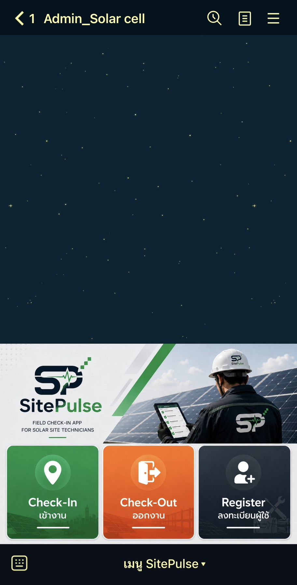
4
ลงทะเบียนผ่าน LINE ช่างทำ
- พิมพ์ ชื่อ–นามสกุล
- พิมพ์ Email
- พิมพ์ เบอร์โทร 10 หลัก (หรือ - เพื่อข้าม)
- ได้การ์ด ลงทะเบียนสำเร็จ — รอ Admin อนุมัติ
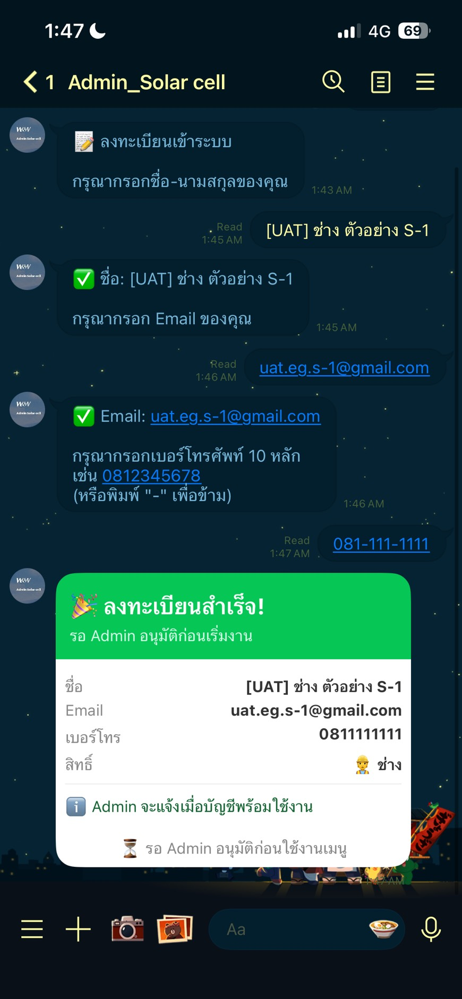
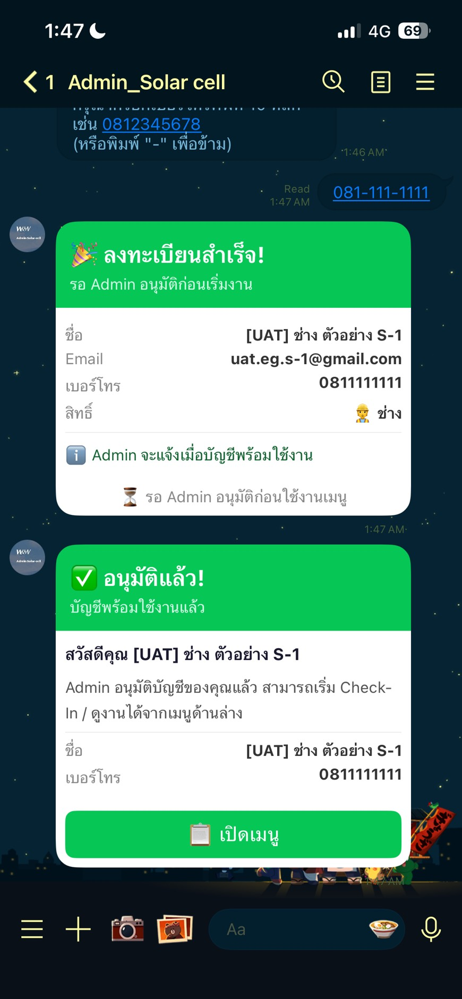
5
อนุมัติช่าง + ผูกบริษัท ของ Admin · ช่างรออย่างเดียว
ช่างไม่ต้องทำอะไรในเว็บ — รอการ์ด ✅ อนุมัติแล้ว แล้วเริ่ม Check-In ได้
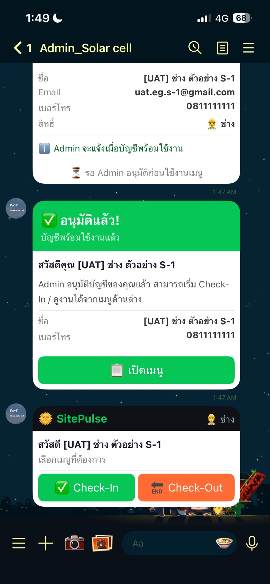
6
Check-In ช่างทำ
A เลือกงาน → เปิดหน้า Check-In
- กด Check-In จากเมนู
- เลือกการ์ดงาน (เช่น สำรวจหน้างาน TSS)
- กด เปิด Check-In (ลิงก์ใช้ได้ 1 ชม.)
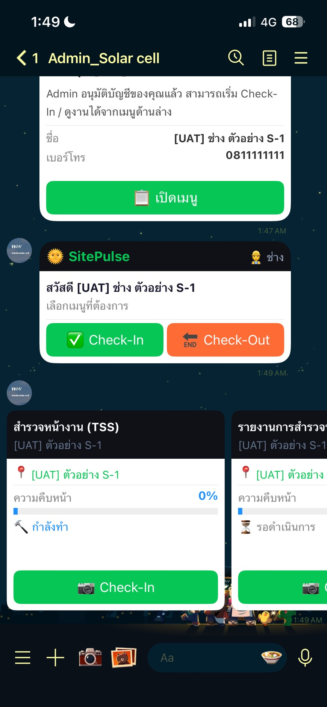
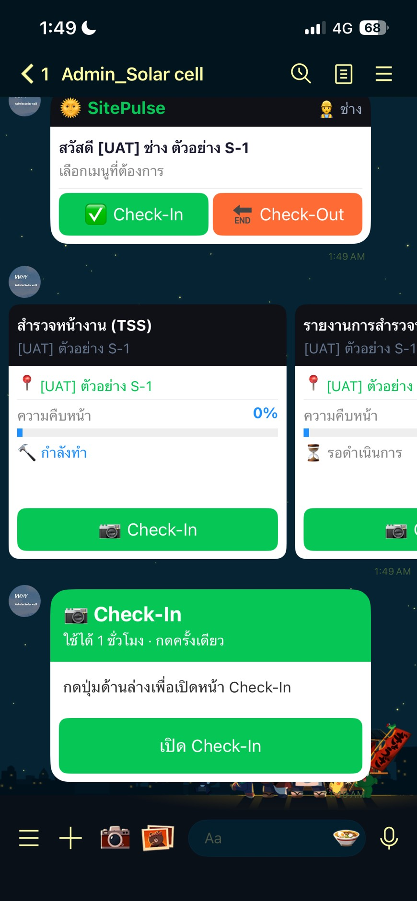
B อนุญาตตำแหน่ง + ได้ GPS
ต้องกด Allow เมื่อระบบขอใช้ตำแหน่ง — ไม่กดจะ Check-In ไม่ได้
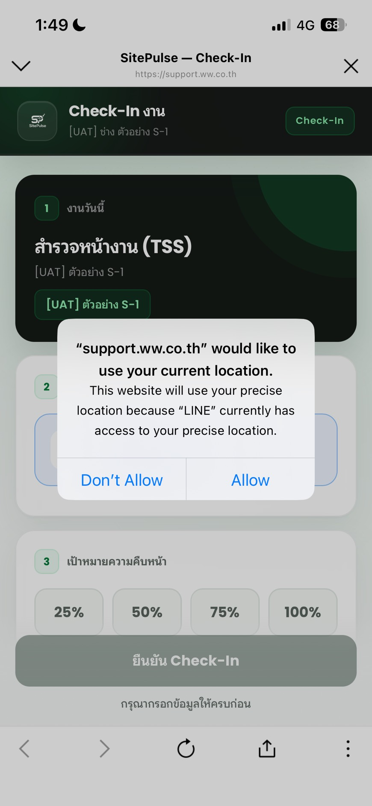
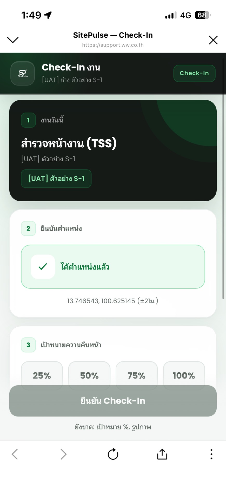
C เลือก % + ถ่ายรูปหน้างาน
แนะนำถ่าย (อย่างน้อย 1 รูป)
หน้าไซต์ · เครื่องมือ · เครื่องจักร/อุปกรณ์ · ชุด PPE
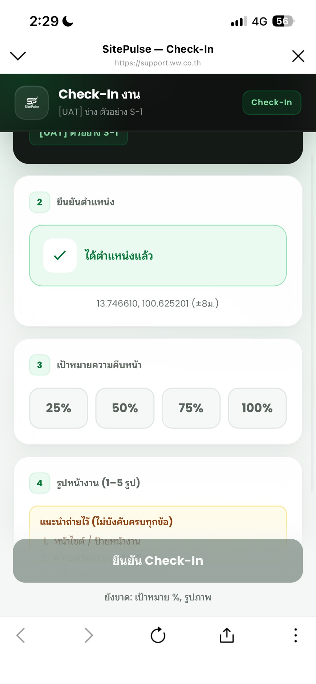
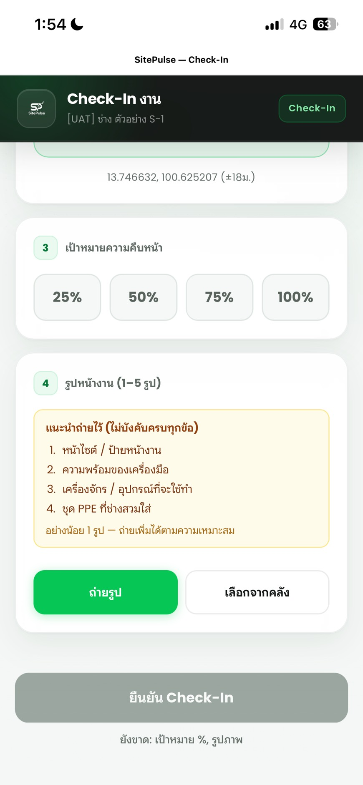
D ในรัศมี ✓ / นอก ✗
✓ ในรัศมี ≤ 100 ม. → Check-In สำเร็จ · Geofence แสดง “ผ่าน”
✗ นอกรัศมี → ไม่ผ่าน · ระบบบอกระยะห่าง · เดินเข้าใกล้แล้วลองใหม่

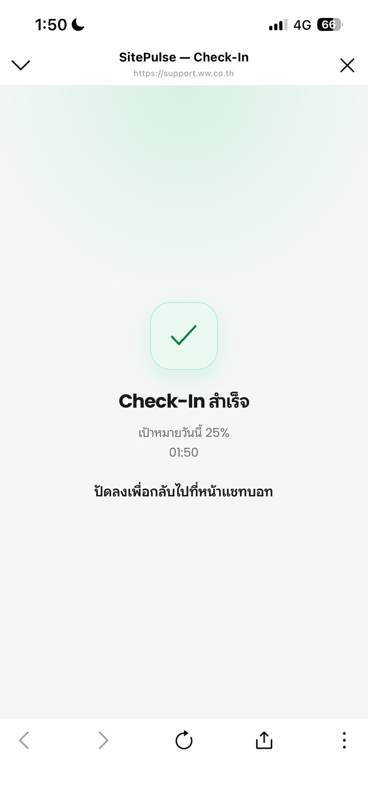

! ลิงก์หมดอายุ
ลิงก์ Check-In / Out ใช้ได้ 1 ชั่วโมง ถ้าหมดอายุ → กลับแชท · พิมพ์ เมนู หรือกด
Check-In ใหม่ · เปิดลิงก์ใหม่ภายใน 1 ชม.

7
แจ้งเตือนกลุ่ม + อัปเดต % ของระบบ/บอท · ช่างไม่กดอะไร
ช่างไม่ต้องกดอะไรเพิ่ม — ดูในกลุ่มว่ามี ✅ Check-In · 🔔 งานครบแล้ว · 🔚 Check-Out
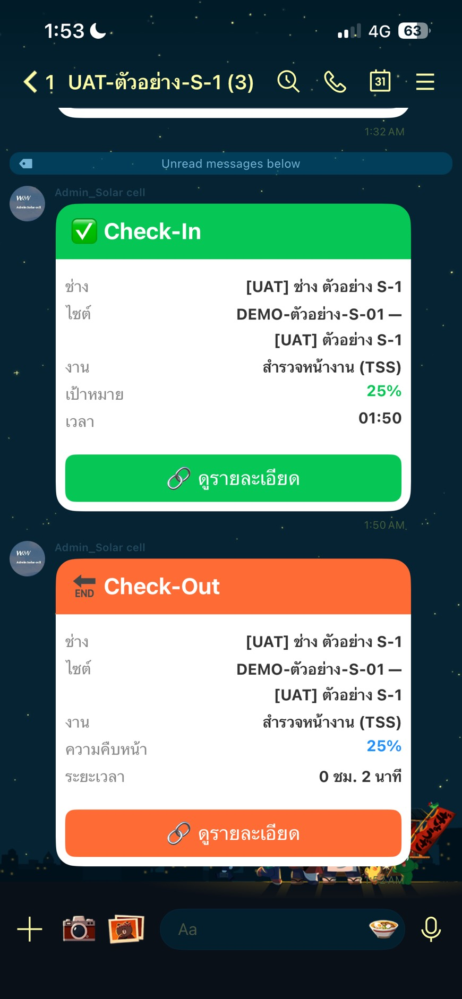
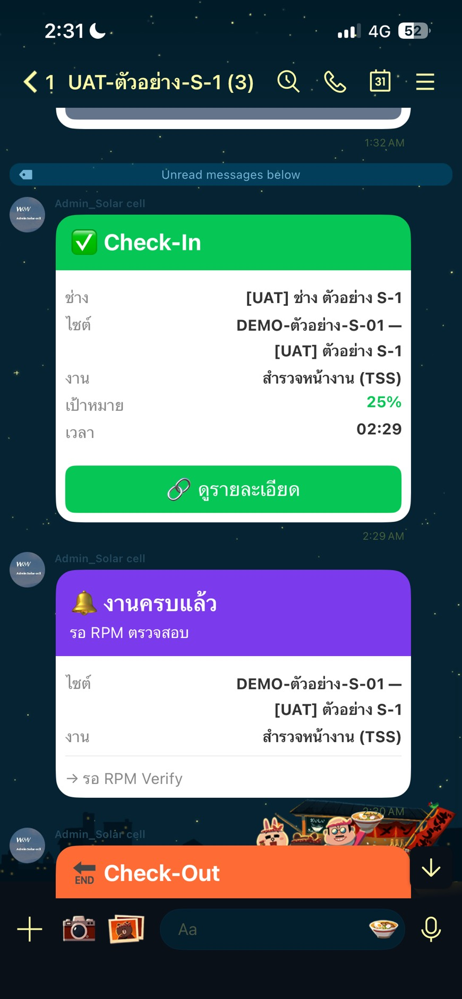
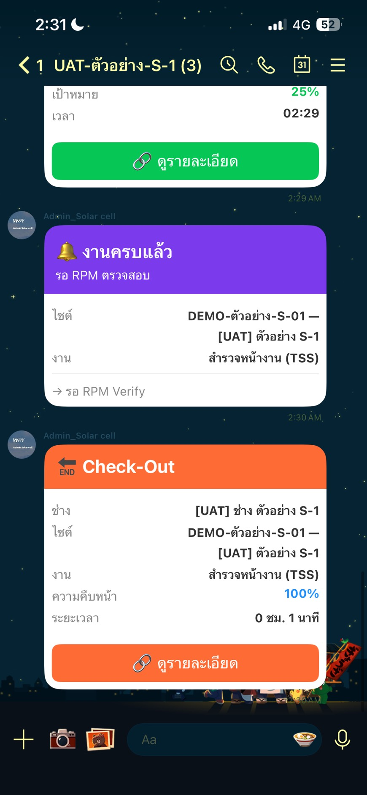
8
Check-Out ช่างทำ · จบงานช่างที่นี่
- กด Check-Out / พิมพ์ ออกงาน → กด เปิด Check-Out
- ยืนยันว่าเป็นงานที่ Check-In อยู่ + ดึง GPS
- เลือก % ความคืบหน้าจริง
- แนบรูป/เอกสารได้ (ไม่บังคับ ยกเว้นปิดงาน 100%)
- กด ยืนยัน Check-Out (ปุ่มแดง)
มี Check-In ค้าง ต้อง Check-Out ก่อนจึงจะ Check-In งานใหม่ได้
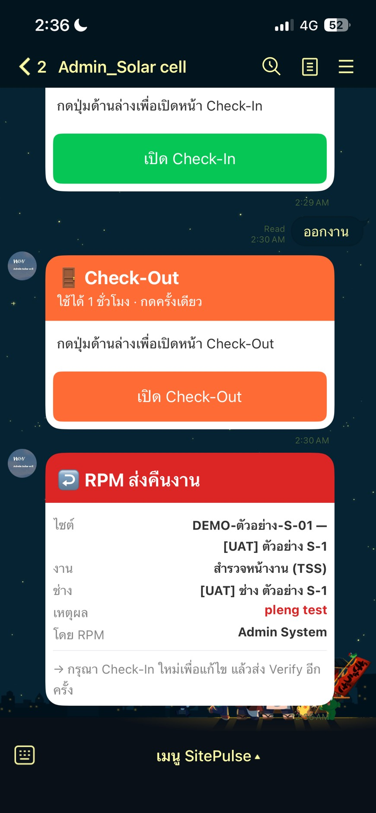
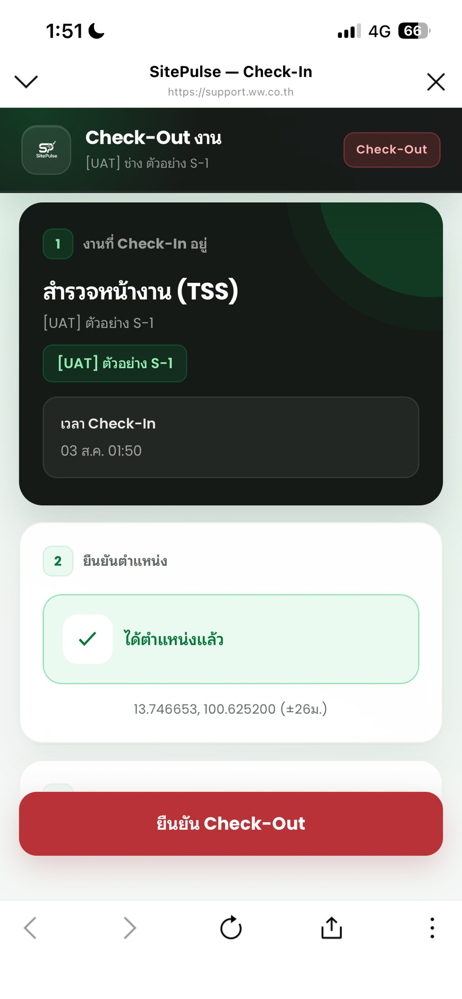
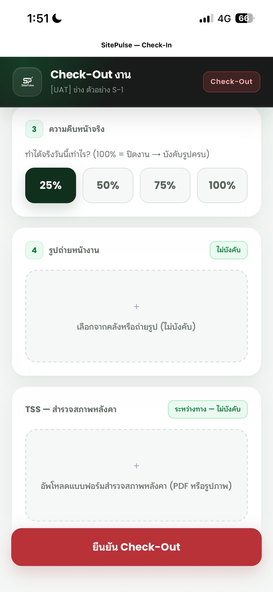
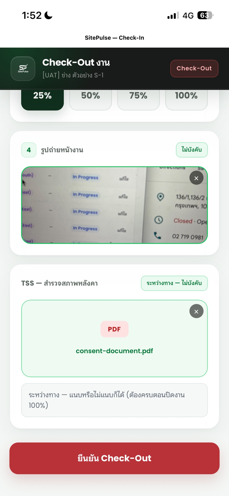
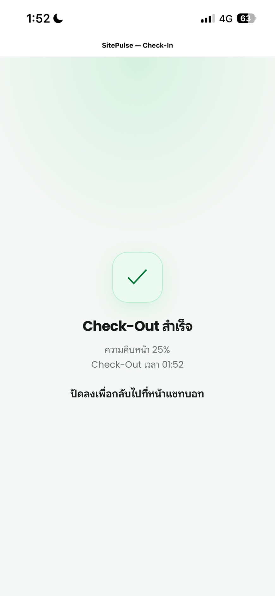

✓ งานของช่างจบที่ขั้น 8 (Check-Out สำเร็จ)
หลังจากนี้ช่างไม่ต้องเข้าเว็บ · ยกเว้นได้รับ “RPM ส่งคืนงาน” ถึงค่อย Check-In ใหม่แก้ตามเหตุผล
ด้านล่างนี้ = คนอื่นทำ (ช่างอ่านเพื่อเข้าใจภาพรวมเท่านั้น)
9
Verify — อนุมัติ / ส่งคืน ของ RPM · ไม่ใช่ช่าง
เจ้าของขั้น: RPM (เว็บ)
ช่างไม่เข้าหน้า Verify · ถ้าถูกส่งคืน จะได้รับการ์ดแดงใน LINE → Check-In ใหม่เพื่อแก้ แล้วส่ง Verify อีกครั้ง
ช่างไม่เข้าหน้า Verify · ถ้าถูกส่งคืน จะได้รับการ์ดแดงใน LINE → Check-In ใหม่เพื่อแก้ แล้วส่ง Verify อีกครั้ง

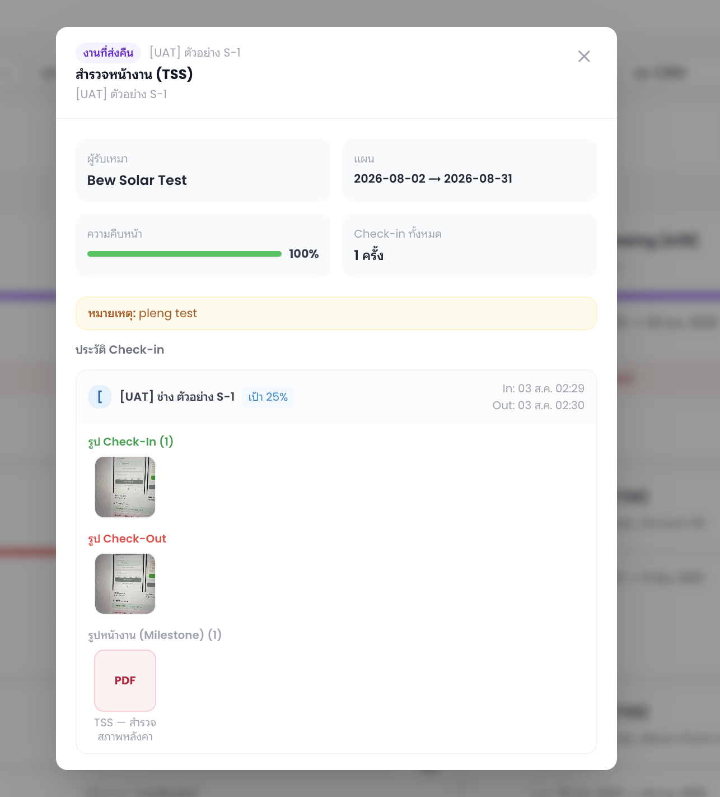
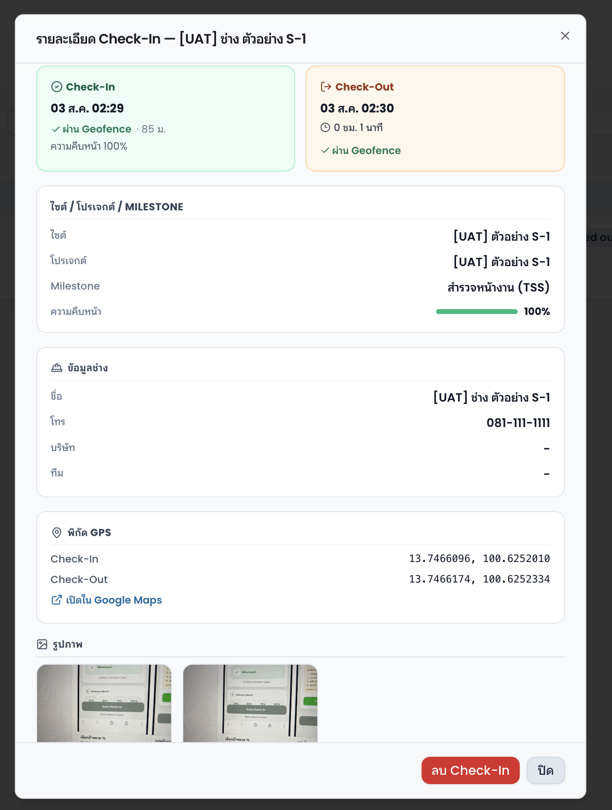

10
ดู Dashboard / รายงาน ของ CBM / ผู้บริหาร · ไม่ใช่ช่าง
เจ้าของขั้น: CBM / ผู้บริหาร (ทีมที่ดูระบบได้)
ช่างไม่ต้องเข้าเว็บรายงาน — ข้อมูลมาจาก Check-In/Out ที่ทำไปแล้ว
ช่างไม่ต้องเข้าเว็บรายงาน — ข้อมูลมาจาก Check-In/Out ที่ทำไปแล้ว